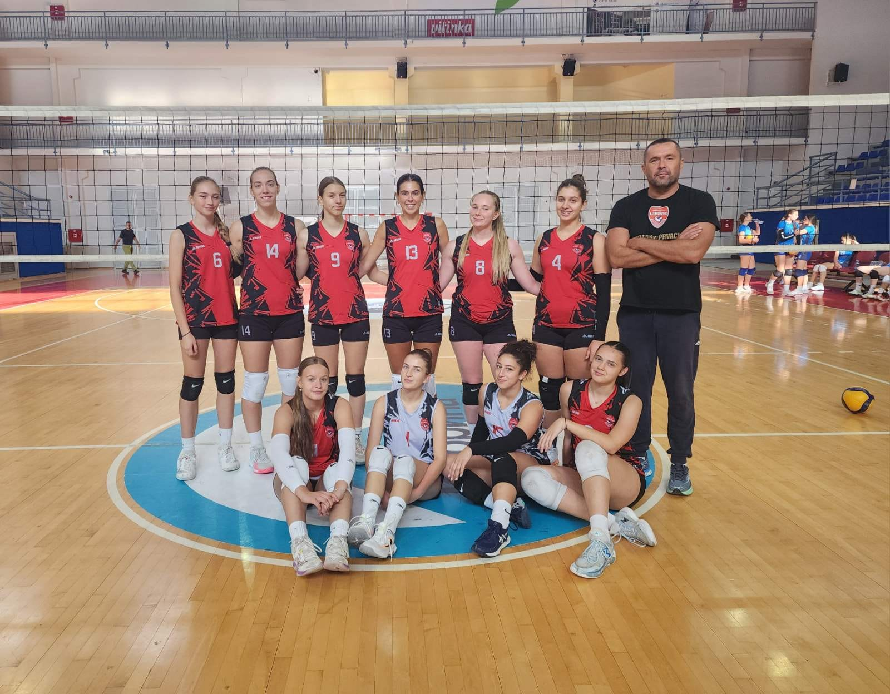

Turnir prvog kruga Kupa RS odigran je u dvorani „Peki“ na Palama, gdje su odbojkašice Libera uz maksimalan učinak izborile prolaz dalje.
Analiza mečeva:
- OK „Libero“ – OK „Volero“ (Pale) 3:1
Otvaranje turnira donjelo je borben meč protiv rivala. Iako je Volero uspio da "otkine" jedan set, Libero je u ključnim momentima pokazao veću smirenost kao i bolji servis čime je kontrolisao ritam utakmice i mirno privukao meč kraju.
- OK „Libero“ – OK „Glasinac“ (Sokolac) 3:0
U drugom susretu protiv ekipe iz Sokoca, Libero je odigrao maksimalno fokusirano od prvog do poslednjeg poena. Izdejstvovana je ubedljiva pobjeda sa 3:0 u setovima.
Prolaz u II krug Kupa RS kao provjera onog što je do sada rađeno na prijateljskim utakmicama kao i na samom pripremama.
Podizanje forme pred prvenstvo: Dvije vezane pobjede na samom startu sezone ogromna su injekcija samopouzdanja za mlađi igrački kadar i potvrda kvalitetnog rada tokom pripremnog perioda.
Srećno u nastavku takmičenja i u drugom krugu Kupa! Napred Libero! 🏐🔴🤍